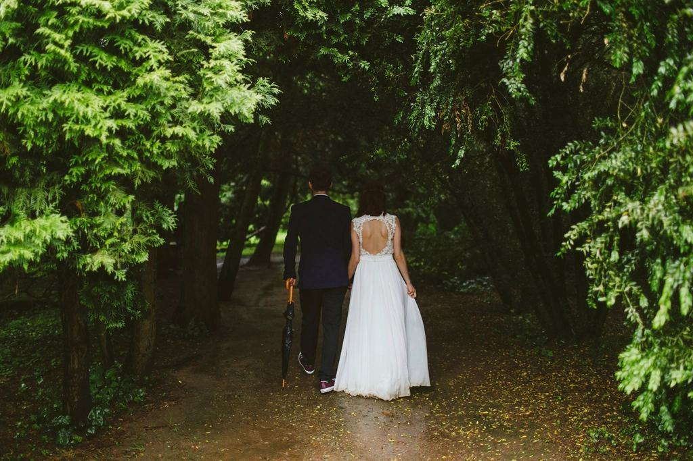
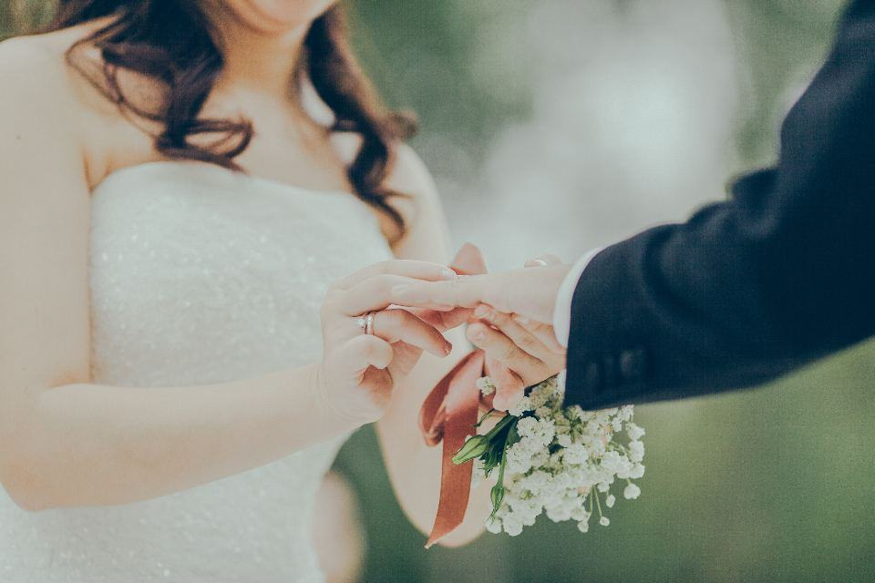
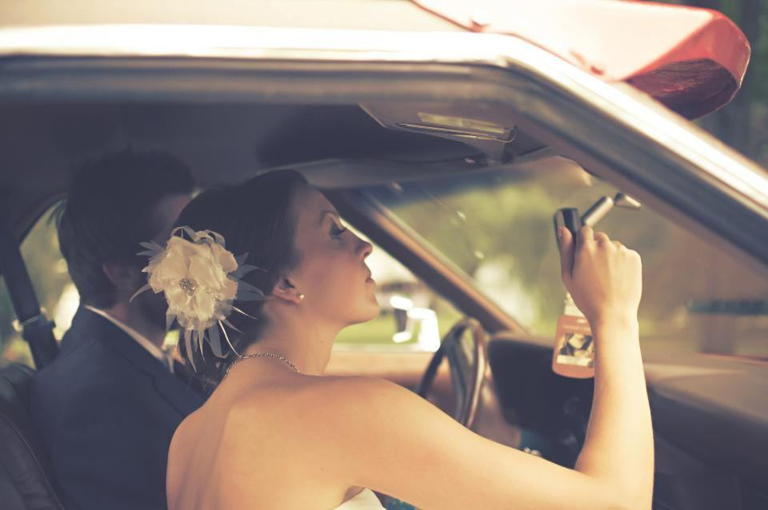
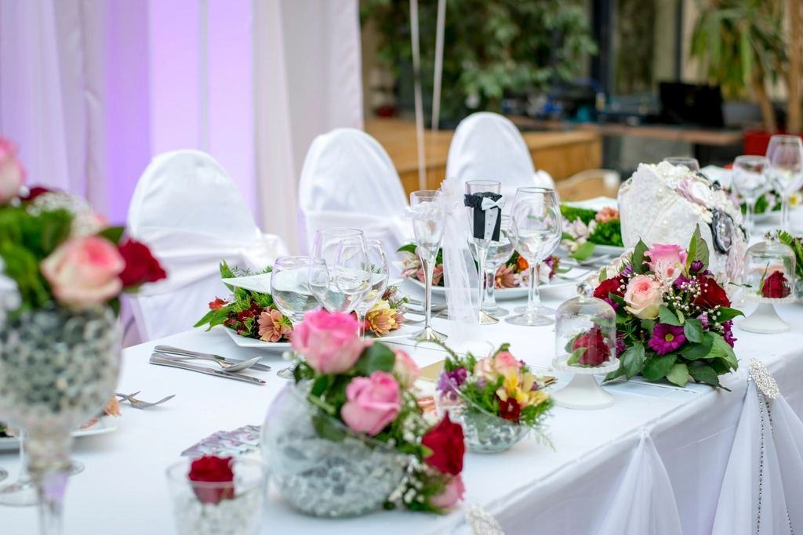
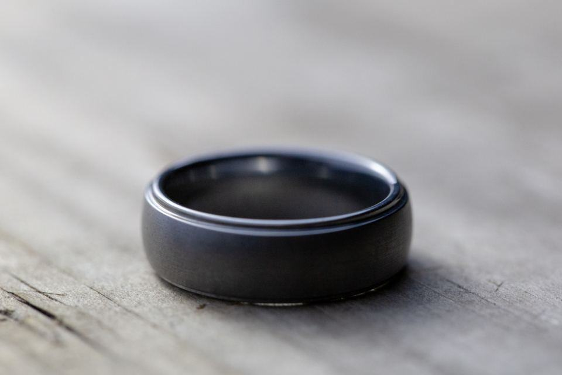
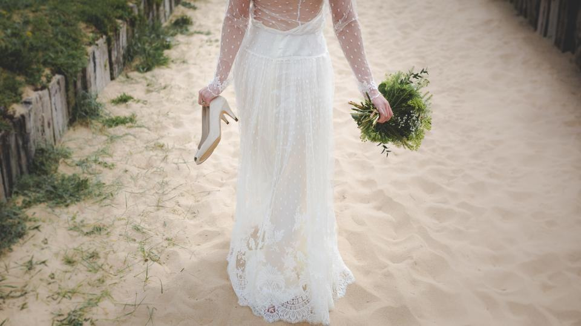
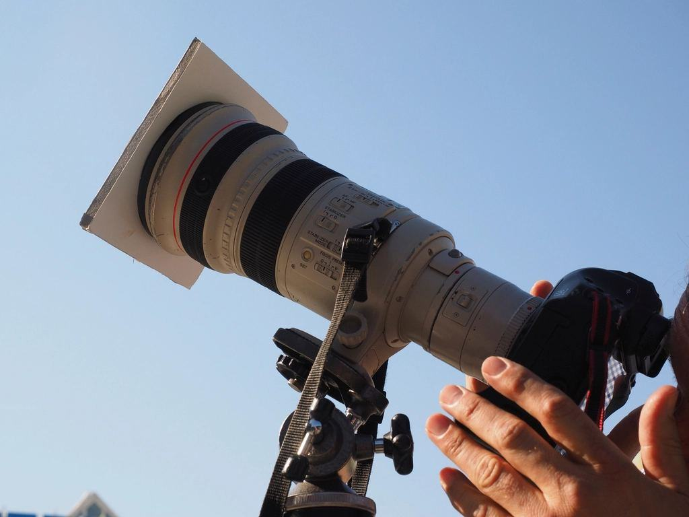
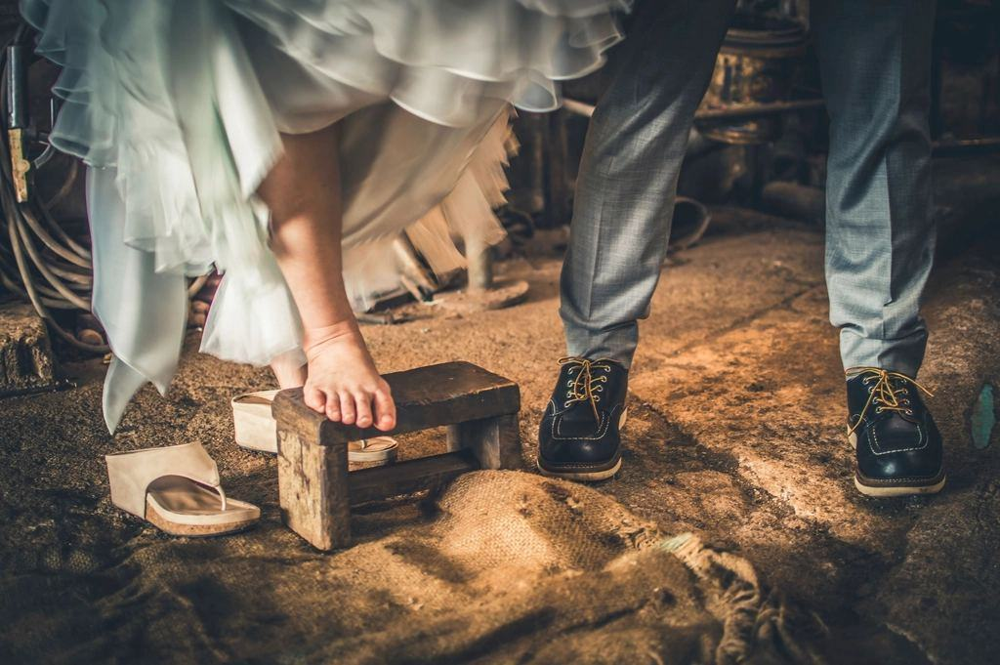
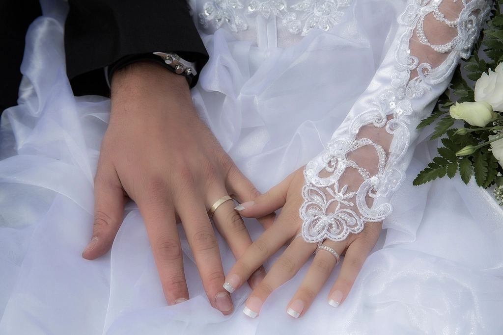

Fotografering
Mina bilder är ljusa och varma, med mycket himmel. Jag fotograferar helst i motljus och lägger porträtten sent på kvällen, när solen går ned över Kalmarsund och sundet blir rosa. Jag tar max 20 bröllop per år och är alltid själv med, med min assistent Klara på heldagarna.
Hur stort blir ert öländska bröllop?

Sommarheldag
Jag är med från att ni dricker kaffe på morgonen till att tårtan är skuren och dansgolvet fyllt. Klara assisterar med ljus, reflexskärm och gruppbilder.
Ni får 500–700 ljust redigerade bilder inom fyra veckor.

Porträtt i motljus
Öland har lite skugga och mycket himmel, vilket gör kvällsljuset fantastiskt. Vi tar porträtten bland väderkvarnarna eller vid sundet när solen står lågt.
I juli går solen ned efter 21.30, så vi tar porträtten mellan förrätt och huvudrätt.

Ladan och långborden
Många öländska bröllop hålls i kalkstenslador med vitkalkade väggar. De ger ett mjukt, ljust inomhusljus som passar min stil.
Jag samarbetar ofta med florister i Borgholm och Färjestaden.

Bok och tryck
En bröllopsbok i ljust linne med 40 uppslag, formgiven av mig och tryckt i Italien. Den skickas hem till er före jul.
Föräldraböcker i mindre format kan beställas samtidigt.
Så blir det från första mejlet
- 1

Skriv några rader
Berätta datum, plats och hur ni tänker er dagen. Jag svarar inom två dagar, även på sommaren.
- 2

Fika i Köpingsvik
Vi ses på ett café vid havet eller på video och tittar på tidsplanen ihop.
- 3

Solnedgången planeras
Jag lägger in exakt solnedgångstid för er dag och föreslår porträttplats utifrån vinden.
- 4

Ljust galleri och bok
Galleriet kommer inom fyra veckor. Boken formger Ebbe under hösten.